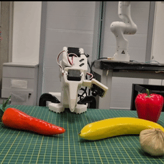

Nikolaos Tsagkas

I am a PhD candidate at the School of Informatics, University of Edinburgh, supported by the Edinburgh Centre for Robotics. I am fortunate to be advised by Prof. Chris Xiaoxuan Lu (UCL) and Prof. Oisin Mac Aodha (UoE). My research focuses on leveraging pre-trained visual representations for robot learning. In late 2025, I was fortunate to intern at the Samsung Research Artificial Intelligence Center in Cambridge, UK, where I worked on Vision-Language-Action (VLA) models.
Prior to my PhD, I earned an MSc in Artificial Intelligence with distinction in 2021 at the University of Edinburgh, under the supervision of Prof. Chris Williams, where I worked on inference and learning for generative capsule models. Before that, I spent a year as a Data Scientist at Ernst & Young. I hold a BSc and MSc in Electrical & Computer Engineering (2019) from the University of Patras, Greece, where I researched real-time hand-gesture recognition using sEMG signals under the guidance of Prof. A. Skodras.
- Jan 2026: 🏆 Our paper, The Temporal Trap: Entanglement in Pre-Trained Visual Representations for Visuomotor Policy Learning, has been accepted at ICRA, 2026. See you in Vienna, Austria! 🇦🇹👋
View older news
- Sep 2025: 💼 I am thrilled to announce that I have joined the Samsung Research Artificial Intelligence Center as a research intern in Cambridge, UK. 🇬🇧
- Aug 2025: 🏆 Our paper, Fast Flow-based Visuomotor Policies via Conditional Optimal Transport Couplings, has been accepted at the Conference on Robot Learning (CoRL), 2025. See you in Seoul, South Korea! 🇰🇷👋
- June 2025: 🏆 Our paper, Learning Precise Affordances from Egocentric Videos for Robotic Manipulation, has been accepted at the IEEE/CVF International Conference on Computer Vision (ICCV), 2025. See you in Hawaii, USA! 🇺🇸👋
- June 2025: 🏆 A short version of When Pre-trained Visual Representations Fall Short: Limitations in Visuo-Motor Robot Learning has been accepted for oral and poster presentation at the 6th Embodied AI Workshop at CVPR 2025. See you in Nashville, Tennessee! 🇺🇸👋
- May 2025: 📜 New paper published on ArXiv! You can access it here: Fast Flow-based Visuomotor Policies via Conditional Optimal Transport Couplings.
- Feb 2025: 📜 New paper published on ArXiv! You can access it here: When Pre-trained Visual Representations Fall Short: Limitations in Visuo-Motor Robot Learning.
- Oct 2024: 🗣️ I will be presenting our paper, Click to Grasp, during the Robot Vision IV session from 09:00 to 10:00 on Fri 18 Oct at Room 4, IROS'24 in Abu Dhabi, UAE.
- Sep 2024: 🗣️ Our paper, Click to Grasp, will be presented at the BMVA Symposium: Robotics Foundation & World Models in London.
- Aug 2024: 📜 New paper published on ArXiv! You can access it here: Learning Precise Affordances from Egocentric Videos for Robotic Manipulation.
- Jun 2024: 🏆 Our paper, Click to Grasp: Zero-Shot Precise Manipulation via Visual Diffusion Descriptors, has been accepted at the IEEE/RSJ International Conference on Intelligent Robots and Systems (IROS), 2024. See you in Abu Dhabi, UAE! 🇦🇪👋
- May 2023: 🏆 Our paper, VL-Fields: Towards Language-Grounded Neural Implicit Spatial Representations, has been accepted (spotlight) at the Workshop on Effective Representations, Abstractions, and Priors for Robot Learning, ICRA 2023. See you in London, UK! 🇬🇧👋
- April 2023: 🏆 Our paper, Inference and Learning for Generative Capsule Models, has been accepted at the Neural Computation Journal, Volume 35, Issue 4.
- Sep 2022: 🎓 Thrilled to announce that I have been accepted at the Centre for Doctoral Training in Robotics and Autonomous Systems PhD programme 🤖🦾, at the University of Edinburgh, UK! 🏴
- Sep 2021: 🎓 Thrilled to announce that I have graduated from the University of Edinburgh with a MSc in Artificial Intelligence, with Distinction!
- Sep 2020: 🎓 Excited to announce that I have been accepted at the Artificial Intelligence MSc programme, at the University of Edinburgh, UK! 🏴
- Nov 2019: 💼 Excited to announce that I have joined Ernst & Young as a Data Scientist!
- Aug 2019: 🎓 Excited to announce that I have graduated with a Diploma of Electrical & Computer Engineering (BSc, MSc), 4th in my class, from the University of Patras, Greece!
- July 2019: 🏆 Our paper, On the Use of Deeper CNNs in Hand Gesture Recognition Based on sEMG Signals, has been accepted (oral presentation) at the 10th International Conference on Information, Intelligence, Systems and Applications (IISA),. See you in Patras, Greece! 🇬🇷👋
- July 2019: 🏆 Honored to receive the "Best Student Innovation Challenge Award" at IEEE Worldhaptics 2019 in Tokyo, Japan, 🇯🇵 for our prototype "Gamified haptic UI for increasing trust in autonomous vehicles"! Thank you Hyundai Motors for sponsoring us! 🚗🕹️
Publications
-

Decoupling the Declarative from the Procedural in Vision-Language-Action ModelsIn ArXiv Preprint , 2026HTML New!